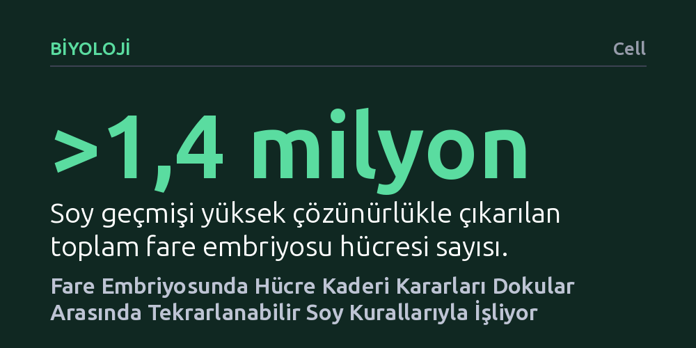

BIYOLOJI · Cell · 2026-10-13
Araştırmacılar, fare embriyosu gelişiminde hücrelerin hangi dokulara dönüşeceğini belirleyen kuralları anlamak için 1,4 milyondan fazla hücrenin soy geçmişini haritalandırdı. Elde edilen veriler, hücre kaderi kararlarının rastgele olmadığını ve dokular arasında yüksek oranda tekrarlanabilir soy mimarileriyle şekillendiğini gösterdi.
Embriyonik gelişimin bir hücre karmaşası değil, her dokuda belirli bir zamanlama ve düzenle işleyen son derece tutarlı bir soy programı olduğunu gösteriyor.

Döllenmiş tek bir yumurtanın bölünerek trilyonlarca hücreden oluşan karmaşık bir organizmaya dönüşmesi, biyolojinin en temel ve büyüleyici süreçlerinden biridir. Bu yolculuk sırasında başlangıçta birbirinin kopyası gibi görünen hücreler; zamanla kas, sinir, kalp veya karaciğer gibi özelleşmiş dokuları oluşturmak üzere farklı yollara ayrılır. Ancak bu hücrelerin ne zaman kendi kaderlerini belirlediği, hangi aşamada geri dönüşsüz bir yola girdiği ve kararların arkasındaki kuralların ne olduğu uzun süredir tam olarak aydınlatılamamıştı.
Bu sorunun cevabı, yalnızca temel biyolojik merakımızı gidermekle kalmıyor; organların nasıl inşa edildiğini ve bu inşa sürecindeki aksaklıkların hangi hastalıklara yol açtığını anlamamız için de zemin hazırlıyor. Gelişim sırasında hücrelerin kaderlerini belirleyen mekanizmalar tam olarak haritalanamadığında, doğumsal anomalilerin kökenini kavramak veya laboratuvarda hasarlı dokuları onaracak hücreler üretmek büyük ölçüde deneme yanılmaya dayanıyor. Dolayısıyla hücrelerin gelişimsel tercihlerini yöneten soy ağacını nicel olarak ortaya koymak hayati bir öneme sahiptir.
Araştırmacılar, bu karmaşık karar ağacını çözebilmek için fare embriyoları üzerinde ileri düzey bir genetik soy takip yöntemi olan PEtracer teknolojisinden yararlandı. Çalışma, organ taslaklarının hızla belirdiği ve hücrelerin en yoğun farklılaşma kararlarını aldığı kritik bir zaman aralığına odaklandı: döllenmeden sonraki 7,5. gün ile 10,0. gün arası (E7,5 - E10,0). Bu evre, embriyonun temel vücut planının çizildiği en hareketli gelişim penceresidir.
Ekip, bu gelişimsel aralıkta yer alan 1,4 milyondan fazla tekil hücrenin soy geçmişini yüksek çözünürlükle yeniden inşa etti. Her bir hücrenin genetik barkodunu ve bölünme geçmişini takip eden bu deneysel yaklaşım; hücrelerin belirli bir dokuya yönelme eğilimini (kader eğilimi), bu kararların kesinleştiği zamanlamayı ve her bir klonun kaç hücre ürettiğini nicel olarak hesaplamayı mümkün kıldı. Böylece gelişim biyolojisi, ilk kez bu denli geniş kapsamlı ve hücre düzeyinde bir soy veri setine kavuştu.
Elde edilen veriler, hücrelerin hangi dokuya dönüşeceğinin bir tesadüf eseri olmadığını net biçimde gösterdi. Aksine, incelenen farklı doku türlerinin tamamında, hücrelerin kader kararlarının şaşırtıcı derecede tutarlı ve tekrarlanabilir soy mimarileri üzerinden ilerlediği belirlendi. Farklı fare embriyolarında dahi hücrelerin soy ağaçları birbirine çok benzer kısıtlanma zamanlamaları ve bölünme oranları sergiledi.
Çalışma ayrıca hücre kaderi tayininde iki farklı strateji katmanının bir arada çalıştığını ortaya koydu: tüm dokularda geçerli olan genel hücresel kurallar ve belirli organ sistemlerine has dokuya özel stratejiler. Hücreler, embriyonik gün ilerledikçe belirli zaman eşiklerinde alternatif yolları kapatarak kendi nihai rollerine kilitleniyordu. Bu bulgu, embriyogenezin kontrolsüz bir dalgalanma değil, son derece hassas biçimde koordine edilen matematiksel bir program olduğunu ortaya koyuyor.
Hücre kader kararlarının böylesine yüksek çözünürlüklü bir haritaya dökülmesi, gelişim biyolojisi ve rejeneratif tıp alanında yeni bir referans çerçevesi sunuyor. Bir hücrenin belirli bir organı oluştururken hangi aşamalardan geçtiğini ve hangi zaman pencerelerinde müdahaleye açık olduğunu bilmek, laboratuvar ortamında kök hücrelerden fonksiyonel doku ve organ üretme çalışmalarına rehberlik edebilir. Aynı zamanda embriyonik gelişim bozukluklarının hangi basamakta ortaya çıktığını saptamak çok daha öngörülebilir hale gelecektir.
Bununla birlikte, araştırmanın sınırlarını doğru kavramak gerekir. Çalışma memeli biyolojisinin standart modeli olan fare embriyolarında yürütülmüştür ve insan embriyonik gelişimindeki ince ayrıntıların fareyle birebir örtüşüp örtüşmediği henüz doğrulanmamıştır. Ayrıca analiz E7,5 ile E10,0 arasındaki kritik evreyle sınırlı olduğundan, bu pencerenin öncesindeki ve sonrasındaki kader kararlarını açıklamak için ilerleyen araştırmalara ihtiyaç duyulmaktadır.